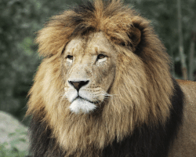
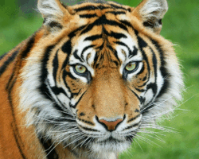
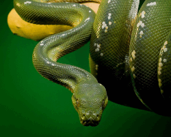
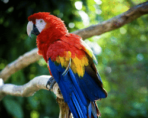
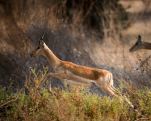
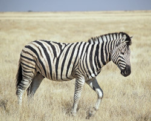

Les animaux sauvages
Dans la forêt tropicale, on peut croiser des jaguars, des perroquets, des toucans et même des serpents !
Le jaguar vit en Amérique centrale et en Amérique du Sud. Il aime grimper dans les arbres pour se reposer ou pour manger tranquillement ses proies.
Le tigre vit dans les forêts d'Asie. C'est le plus grand de tous les félins. Il a une fourrure jaune (parfois blanche ou crème) rayée de noir, et a les yeux bleus.
Les perroquets sont de gros oiseaux qui se nourrissent de fruits et de graines. Leurs plumes peuvent être de différentes couleurs : rouge, jaune, bleu, vert, et même rose !
Le toucan est facile à reconnaître avec son très gros bec. Il se nourrit de fruits, mais aussi d'insectes qu'il attrape avec sa langue.
Il existe de nombreuses espèces de serpents à travers le monde. Certains sont particulièrement grands comme le boa ou le python. Pour tuer leurs proies, les serpents qui n'ont pas de venin s'enroulent autour d'elles et les étouffent.
Dans la savane, on peut croiser le zèbre, la girafe, mais aussi l'antilope et le lion.
L'antilope est très craintive, car elle sert de nourriture aux lions et aux guépards. Pour leur échapper, elle court très vite et peut faire des bonds de trois mètres de haut !
Le lion est surnommé « le roi des animaux ». Avec sa crinière autour de son cou, on le reconnaît facilement.
Il passe la plus grande partie de son temps à dormir, c'est la lionne qui s'occupe des lionceaux et de la chasse.
|  |  |  |
| Lion | Tigre | Python |
|---|---|---|
|  |  |  |
| Perroquet | Antilope | Zèbre |